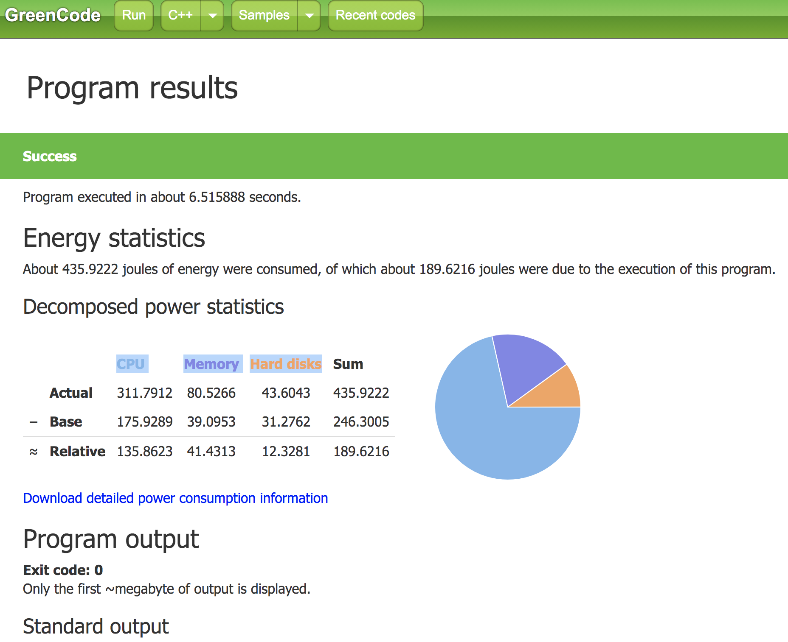

Project 1: Retrieving, comparing, and presenting process profiling data
- Submission includes:
1) A readme file with instructions on how to run your project.
2) A 500 x 500 gif your results, which should be named p1.lastname.png.
3) The source code. You should also name your project P1.lastname.zip.
These are due at 11:59 pm Sunday, March 29th, and should be sent through Email (with the subject: CS5352 P1 submission: your full name) to the tommy.dang@ttu.edu. Late submission costs you 2%, every day..
- This project is 20% of your final grade:
- 10% for Retrieving the process profiling data, such as memory usage, CPU usage, and page faults
- 5% for Comparing the efficiency of two input algorithms or programs.
- 5% for Presenting the performance comparison results.
Project Description:
- The idea of this project to extracting the system vs. user-level information of the running programs and use them to compare the efficiency of two algorithms.
- The user-level information should include the running time (from the program starts to when it ends)
- The system-level information should include:
1) CPU usage
2) Memory usage
3) Hard drive usage
4) RSS: Resident set size: This is non-swapped physical memory that a process had used
5) VMS: Virtual memory size: This is the total virtual memory used by the process
6) Number of page faults
-
Algorithms selections are due at 11:59 pm Saturday, March 7th, and should be sent through Email (with the subject: CS5352 P1 topic: your full name) to the tommy.dang@ttu.edu.
Late submission costs you 2%, every day.
The professor will make sure that the pairs of algorithms selected by each student are different:
The pairs of algorithms can be overlapped but not the same. No algorithms can be selected by more than 2 students.
- Examples of Algorithms (The professor should be able to customize the input for project evaluation):
1) QuickSort vs. MergeSort. Full
2) DSF vs. BFS. Taken
3) Shortest path algorithms: Dijkstra's algorithm vs. Kruskal's algorithm Taken
4) Minimum Spanning Tree: Prim's algorithm vs. Kruskal's algorithm Taken
5) Hash function and collision-resolution methods Taken
6) Page replacement algorithms: LRU vs. FIFO Taken
7) Job scheduling algorithms: Shortest Job First vs. FIFO Taken
8) Data aggregation algorithms
9) Clustering algorithms: K-means vs DBScan Taken
10) Classification techniques Taken
11) Other machine learning techniques
12) Your choices
- Running conditions:
1) Algorithm/Program A alone
2) Algorithm/Program B alone
3) Algorithms/Programs A and B concurrently
- You present the analysis of your results and findings on comparing the algorithms under different running conditions.
- You should use Python for your project, but it is not mandatory.
References:
- Tutorial for Project 1: [PDF]
- https://userweb.cs.txstate.edu/~zz11/software/scheduling/
- https://greencode.cs.txstate.edu/#/

Project lists
| No. |
Student name |
Present date |
Topic |
Project link |
Late |